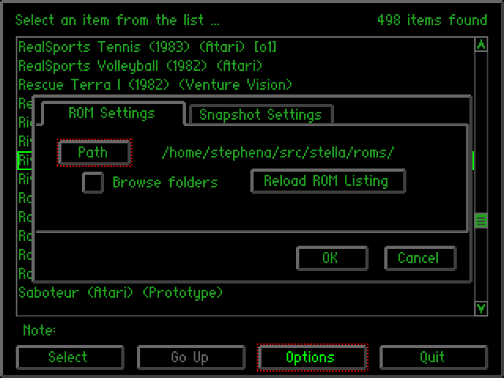
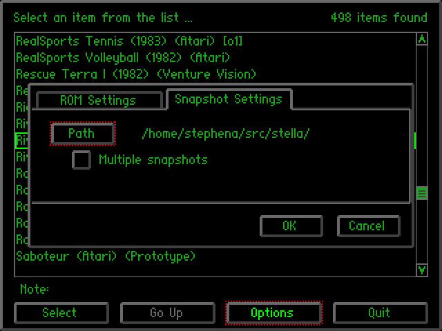

Stella
A multi-platform Atari 2600 VCS emulator
Release 2.0
User's Guide
- Introduction
- What You Will Need
- Installation
- Games
- Starting A Game
- Changing Options
- Settings File
- Keyboard Layout
- Event Remapping
- Integrated Debugger
- Game Properties
- Stelladaptor Support
- Acknowledgments
- License and Disclaimer
February 1999 - October 2005
The Stella Team
Stella Homepage
A Brief History of the Atari 2600
 In the early 1970's, video arcade games gained commercial success for the
first time. The American public was introduced to Pong, Tank, and other
interactive video games which populated amusement parks, bars, and arcades.
The games were successful enough to create interest for home versions, so in
1975 Atari released Home Pong and it was a smash hit. Other companies such as
Magnavox and Coleco followed suit and released their own dedicated console
games. Then in 1976, Fairchild Camera and Instrument introduced the Channel F
system, the first cartridge based home video game system. The industry
recognized that cartridge systems were the future of video gaming, and began
development in that direction. In January 1977, RCA released the Studio II,
another cartridge based system, although it only projected in black and white
and seemed to be focused on educational titles. Then, in October 1977, Atari
released the Atari VCS (Video Computer System) with an initial offering of nine
games. This system, later renamed the Atari 2600, took the industry by storm
and dominated the marketplace for years to come.
In the early 1970's, video arcade games gained commercial success for the
first time. The American public was introduced to Pong, Tank, and other
interactive video games which populated amusement parks, bars, and arcades.
The games were successful enough to create interest for home versions, so in
1975 Atari released Home Pong and it was a smash hit. Other companies such as
Magnavox and Coleco followed suit and released their own dedicated console
games. Then in 1976, Fairchild Camera and Instrument introduced the Channel F
system, the first cartridge based home video game system. The industry
recognized that cartridge systems were the future of video gaming, and began
development in that direction. In January 1977, RCA released the Studio II,
another cartridge based system, although it only projected in black and white
and seemed to be focused on educational titles. Then, in October 1977, Atari
released the Atari VCS (Video Computer System) with an initial offering of nine
games. This system, later renamed the Atari 2600, took the industry by storm
and dominated the marketplace for years to come.
 Because of oversupply, the Christmas season of 1977 was very rough on the
video game industry, and the Atari 2600 was the only system that managed to
emerge unscathed. Atari enjoyed strong sales in 1978 and a fantastic holiday
season, as Atari released more games such as Outlaw, Spacewar, and Breakout.
Internally however, Atari was at odds. Nolan Bushnell, the inventor of pong and
founder of Atari, wound up leaving the company and purchased Pizza Time Theater,
which later became the successful Chuck E. Cheese! In 1979 Atari continued
their trend and released 12 more games which met with continued success.
However, Atari was now facing some stiffer competition from the Mattel
Intellivision and the Magnavox Odyssey2.
Because of oversupply, the Christmas season of 1977 was very rough on the
video game industry, and the Atari 2600 was the only system that managed to
emerge unscathed. Atari enjoyed strong sales in 1978 and a fantastic holiday
season, as Atari released more games such as Outlaw, Spacewar, and Breakout.
Internally however, Atari was at odds. Nolan Bushnell, the inventor of pong and
founder of Atari, wound up leaving the company and purchased Pizza Time Theater,
which later became the successful Chuck E. Cheese! In 1979 Atari continued
their trend and released 12 more games which met with continued success.
However, Atari was now facing some stiffer competition from the Mattel
Intellivision and the Magnavox Odyssey2.
 Atari needed a mega-hit in 1980 in order to squash the competition, and they
found it in the home version of a game from Japan called Space Invaders. It was
so popular that people were buying the Atari 2600 just so they could play Space
Invaders at home. Following that, Atari released Adventure, which was the first
video game to contain an Easter Egg - placing an object in a certain area
revealed the programmer's name, Warren Robinett. 1980 was important for another
reason - the creation of the first ever third party software producer, Activision.
The company was formed by four Atari employees who were unsatisfied with the
working conditions at the company. They released four games initially: Dragster,
Fishing Derby, Checkers and Boxing. The games were very well received by the
public, and revealed that the Atari 2600 was capable of better games than
Atari themselves had been producing. Atari tried to prevent Activision from
selling games, but they failed and Activision grossed $70 million that year.
Atari needed a mega-hit in 1980 in order to squash the competition, and they
found it in the home version of a game from Japan called Space Invaders. It was
so popular that people were buying the Atari 2600 just so they could play Space
Invaders at home. Following that, Atari released Adventure, which was the first
video game to contain an Easter Egg - placing an object in a certain area
revealed the programmer's name, Warren Robinett. 1980 was important for another
reason - the creation of the first ever third party software producer, Activision.
The company was formed by four Atari employees who were unsatisfied with the
working conditions at the company. They released four games initially: Dragster,
Fishing Derby, Checkers and Boxing. The games were very well received by the
public, and revealed that the Atari 2600 was capable of better games than
Atari themselves had been producing. Atari tried to prevent Activision from
selling games, but they failed and Activision grossed $70 million that year.
By 1981, the video game industry was basically a horse race between the 2600
and the Intellivision. While the Intellivision was technologically superior in
some respects, the 2600 continued to lead in sales. Atari released the home
version of Asteroids, which was a huge success. Inspired by the success of
Activision, another software development group called Imagic was formed. They
would not release any games until 1982 however. Another company, Games by Apollo,
was formed in Texas and released several games that year.
Coleco entered the market in 1982 with the release of the graphically
superior Colecovision. To combat this new system, Atari produced the 5200,
a technologically comparable system. The 2600 dropped $100 in price in order
to remain competitive. Then a company called Arcadia released a peripheral
called the Supercharger which played games in an audio cassette medium. This
allowed for multiple loads and expanded the 2600's capabilities.
 Atari released Pac-Man and E.T. that year, two incredibly hyped games which
were critical flops.
Although Pac-Man sold many copies, it was considered to be a poor
translation of the arcade hit. However, there were many fantastic games
produced for the 2600 during this period, and it was still selling strong.
Atari released Pac-Man and E.T. that year, two incredibly hyped games which
were critical flops.
Although Pac-Man sold many copies, it was considered to be a poor
translation of the arcade hit. However, there were many fantastic games
produced for the 2600 during this period, and it was still selling strong.
Ever since the inception of Activision, Atari had been fighting to keep third
parties from producing cartridges which they felt were stealing profits from
them. Finally the issue was settled when Atari agreed to allow third party
manufacturing in exchange for a royalty. Suddenly software companies began
popping up all over, and 1982 saw releases from companies like Venturevision,
Spectravision, Telesys, CBS, 20th Century Fox, US Games, M Network, Tigervision,
Data Age, Imagic and Coleco. There was even a company that released a line of
X-Rated games for the 2600 called Mystique. The year was financially successful
for Atari, however there seemed to be a glut of software. Although there were
many quality titles still produced, there was an increasing number of rushed
games as manufacturers attempted to cash in on the craze.
More companies jumped on the band wagon in 1983. Zimag, Ultravision, Amiga,
and others were also producing games and peripherals. It seemed as if there was
just too much product to meet the demand, and as it turned out there was. By
the end of the year, companies began folding. US Games, Data Age, Games by
Apollo, Telesys and others all closed their doors from poor sales. A video
game crash was occurring, and all companies were taking it on the chin.
1984 was a much more subdued year for the Atari 2600, and the price of the
system had now dropped to $40-$50. Many were saying that the video game
industry was dead. However, Atari surprised everyone by announcing the release
of the 7800, and also promising more 2600 games with improved graphics and
sound. Unfortunately, neither of these things happened in 1984 because Atari
sold their home video game division to Jack Tramiel who believed that home
computers would replace video game systems. No further mention of the 2600 or
7800 was made that year, and it appeared that they might be dead.
1985 was another very quiet year for Atari and video games in general, and only
a few games were released for the 2600. Activision produced Cosmic Commuter and
Ghostbusters, but with little fanfare or marketing, these games did not sell
well. However, because of the huge game library and cheap price, Atari still
sold over a million 2600 consoles in 1985.
There were very few plans for home video game systems by any company in 1986,
since the market appeared to be dead. Then, to most people's surprise, Nintendo
brought the NES to America and it was a smash hit, proving that video games
still had a place in the US. Atari decided that maybe it would be a good idea
to release the 7800 units it had in storage, and produce some more 2600 games.
The 7800 was released with only 3 games initially available, although it was
compatible with the 2600 library. They also redesigned the 2600 as the 2600 Jr.,
a machine with the same abilities, but a new look and marketing campaign. It
was sold for less than $50.
 Video games were once again selling phenomenally in 1987. Atari released
several new titles, including Jr. Pac-Man, and also licensed a number of games
from other companies such as Donkey Kong and Q*Bert. These new titles sold for
$10-$15. Interestingly, a number of titles began appearing again from third
part companies such as Epyx, Froggo, and Exus. It seemed that the 2600 was not
dead yet!
Video games were once again selling phenomenally in 1987. Atari released
several new titles, including Jr. Pac-Man, and also licensed a number of games
from other companies such as Donkey Kong and Q*Bert. These new titles sold for
$10-$15. Interestingly, a number of titles began appearing again from third
part companies such as Epyx, Froggo, and Exus. It seemed that the 2600 was not
dead yet!
 In 1988, Atari rehired Nolan Bushnell and announced a number of new
titles, including Secret Quest, a game written by Mr. Bushnell himself. Atari
continued to manufacture these games even until 1989. However, it was apparent
that the 2600, after its introduction over a decade ago, was finally at the end
of its run. Although it was still produced and marketed outside of the US, the
Atari 2600 finished its run in America. No other console has had such a long
history or sold as many systems in the U.S.
In 1988, Atari rehired Nolan Bushnell and announced a number of new
titles, including Secret Quest, a game written by Mr. Bushnell himself. Atari
continued to manufacture these games even until 1989. However, it was apparent
that the 2600, after its introduction over a decade ago, was finally at the end
of its run. Although it was still produced and marketed outside of the US, the
Atari 2600 finished its run in America. No other console has had such a long
history or sold as many systems in the U.S.
Today, the 2600 still has a large number of fans who remember the countless
games played over the years, and the years to come. There are even games being
produced by hobbyists, some of them quite professionally, being released on
newly burnt cartridges with labels and manuals. And the recent trend in
retrogaming has brought many more video game fans to rediscover the 2600, and
it continues to live on 22 years after its release!
Alexander Bilstein
February 1999
Stella is a freely distributed multi-platform Atari 2600 VCS emulator; originally
developed for Linux by Bradford W. Mott. Stella allows you to enjoy all of
your favorite 2600 games once again by emulating the 2600's hardware with
software. Stella is written in C++, which allows it to be ported to other
operating systems and architectures. Since its original release Stella has
been ported to AcornOS, AmigaOS, DOS, FreeBSD, Linux, MacOS, OpenStep, OS/2,
Sega Dreamcast, Unix, and Windows.
New in Release 2.0
- Added integrated GUI. Stella is now a fully graphical application, and all
settings can be changed dynamically while the application is running. That
means the commandline is no longer required (but support is still there
for those who want to use it).
- Added ROM launcher. You can now exit a game and start playing another one
from directly within Stella (you no longer have to quit Stella and
restart it).
- Because of the integrated GUI and ROM launcher, StellaX and KStella
(the Windows and Linux frontends) have been discontinued. The OSX
port now uses the launcher as well.
- Added an integrated debugger for game developers. This is currently
the first version of a debugger in Stella, but it's already quite
usable.
- Added new sound subsystem, which is much faster and more accurate. Related
to this, added stereo sound output (used by some homebrew games).
- Added ZIP support. Stella can now open ROM's compressed in zip
format.
- Added cartridge 'frying', thanks to Fred "batari" Quimby. This
emulates the action of turning the power button on and off on a
real Atari, often resulting in some strange effects.
- Added ability to edit current ROM properties from directly within
Stella, which can then be saved directly into the 'user.pro' file.
So creating a properties entry for a new ROM can be done without
any external tools.
- Added initial support for using Stella in an 'arcade-box'
environment without a keyboard. This consists of an in-game
menu for choosing common actions in Stella, as well as using the
joystick navigate the mouse pointer.
- Reworked properties system to use both a system-wide 'stella.pro' and
a per-user 'user.pro' properties files. Changes made by the user
and stored in 'user.pro' are no longer erased when upgrading Stella.
- Added support for cartridges with 3E bankswitching format.
- Added preliminary Cheat support.
- Added Alt/Shift-Cmd z, x, c, v, b, n keys to enable/disable the
P0, P1, M0, M1, BL, PL bits in the TIA, respectively.
- Added Alt/Shift-Cmd . key to disable all bits in the TIA.
- Added Alt/Shift-Cmd / key to enable all bits in the TIA.
- Added Alt/Shift-Cmd g key to switch dynamically switch between
software and OpenGL modes while Stella is running.
- Added Ctrl/Cmd r key to reload the ROM currently being
emulated.
- Added Alt/Shift-Cmd s key to merge the current game properties
into the properties file.
- Added help commandline argument. Launching Stella from the
commandline with no options now starts Stella in ROM launcher mode,
instead of showing help (as in previous versions).
- Added the following commandline arguments for developers:
pro, type, ld, rd, tv, lc, rc, bc, format, xstart, ystart, width
height, cpu, hmove. Developers can consult the manual for
further details.
- Removed mergeprops commandline argument, since there are now
dedicated keys to either save or merge game properties.
- Removed hidecursor commandline argument. Stella will now
automatically decide when to use this setting.
- Fixed framerate when switching between NTSC and PAL modes. Stella
now uses the correct framerate based on the format of the ROM,
in terms of both video and audio.
- Added 'configure' support to the build process for both Linux and
Win32 (using MinGW). Developers can now use the familiar 'configure;
make; make install' commands to compile Stella.
- Further consolidation and integration of SDL. This should lead to
faster operation and a more consistent look for all ports.
- Fixed some 64-bit issues. Stella now compiles and runs correctly
on AMD64 and PPC64 Linux systems.
- Updated the Stella manual with pictures of the new integrated GUI.
Features
- High speed emulation using optimized C++ code
- Supports high quality sound emulation using code derived from Ron Fries'
TIA Sound Emulation library, including stereo sound support
- Emulates the Atari 2600 Joystick Controllers using your computer's keyboard
or joysticks
- Emulates the Atari 2600 Keyboard Controllers using your computer's keyboard
- Emulates one Atari 2600 Paddle Controller using your computer's mouse
- Support for real Atari 2600 controllers using the
Stelladaptor
- Emulates the Atari 2600 Driving Controllers using your computer's keyboard
or joysticks
- Emulates the CBS Booster-Grip Controller using your computer's keyboard or
joysticks
- Supports cartridges using Atari's standard 2K and 4K format
- Supports cartridges using Atari's 8K, 16K, and 32K bank-switching schemes
- Supports cartridges using Activision's 8K bank-switching scheme
(Robot Tank and Decathlon)
- Supports cartridges using CBS Electronics' 12K bank-switching scheme
- Supports cartridges using Chris Wilkson's Megacart 128K bank-switching
scheme
- Supports cartridges using Commavid bank-switching scheme
- Supports cartridges using M-Network's 16K bank-switching scheme
- Supports cartridges using Parker Brothers' 8K bank-switching scheme
- Supports cartridges using Tigervision's bank-switching scheme with up to
512K ROM
- Supports cartridges using UA Limited bank-switching scheme
- Supports Supercharger single-load and multi-load games
- Supports property file for setting the properties associated with games
- Supports user specified frame rate
- Supports the NTSC and PAL television palettes
- Supports several "undocumented features" of the TIA graphics chip used by
some games
- TIA emulation supports full collision checking
The following sections outline the basic system requirements for running
Stella under various operating systems.
Note that for this version of Stella, you are required to have a
stella.pro file. It is no longer optional as it was for past versions.
General (required for all versions of Stella)
- Enough RAM for the OS + 16MB RAM for the emulation; 32MB highly recommended
- 15 bit color minimum; 16 bit color graphics card highly recommended
- SDL version 1.2.0 or greater
- Latest versions of the libpng and zlib libraries
- Joysticks or gamepads are highly recommended
- Mouse or Stelladaptor with real paddles required for paddle emulation
- Some ROM images (no, we won't tell you where to find them)
Linux/UNIX
The Linux version of Stella is designed to work on a Linux Workstation with
the following:
- Linux Kernel 2.4.x, Linux Kernel 2.6.x is highly recommended
- GNU C++ compiler version 2.95 and the make utility are required for compiling
the Stella source code; GNU C++ compiler version 3.2.x/4.x or later is highly
recommended
- Pentium class machine required (Stella may compile on other
architectures, but it hasn't been extensively tested)
Macintosh
The Mac version of Stella is designed to work on a Power Macintosh with
the following:
- Mac OSX 10.1 or Above
- 500 MHz G4 PPC processor or above (Stella may work with a G3
processor, but this is still a work-in-progress)
- OpenGL capable video card. Software rendering mode is still available,
but as of OSX 10.4 is substandard compared to OpenGL.
Windows
The Windows version of Stella is designed to work on Windows 98/ME/2000/XP with
the following:
- Visual C++ 7 or MinGW compiler is required to compile the Stella
source code
- Pentium class machine required; OpenGL accelerated video card highly
recommended
- SDL version 1.2.8 or greater (or included SDL.dll) required for
Stelladaptor support
Stella is distributed in both source and binary form. Once you have a Stella
distribution you should follow the instructions for your operating system given
below.
If you have a supported joystick and driver installed and SDL can access the device,
you can play games using joysticks.
Currently, sound is supported using SDL. As long as SDL can detect your sound card,
Stella will be able to produce sound.
Linux/UNIX
- Compressed tarball (stella-release-src.tar.gz)
- Extract files from the distribution:
tar zxvf stella-release-src.tar.gz
- Change directories to the stella-release directory
- Configure the build with the following command:
./configure (--help for list of options)
- Build the executable with the following command:
make
- Install the executable with the following command:
make install
- Source RPM (stella-release-1.src.rpm)
- Rebuild the archive with the following command:
rpmbuild --rebuild stella-release-1.src.rpm
- Follow the instructions under Binary RPM to install
the stella-release-1.ix86.rpm file
- Binary RPM (stella-release-1.ix86.rpm)
- Install the binary RPM with the following command:
rpm -Uvh stella-release-1.ix86.rpm
Macintosh
To install the Mac binary, simply download the DMG disk
image. Mount the disk image, then copy the StellaOSXrelease folder to
your hard drive.
Windows
- Compressed tarball (stella-release-src.tar.gz)
- Extract files from the distribution using Winzip,
Total Commander, or some other archiving program that supports
gzipped tar files
- If compiling the Stella executable using MinGW, use the same commands
as specified under Linux/UNIX - Compressed tarball
- If compiling using Visual C++ 7:
- Open the stella-release/src/win32/Stella.sln
file using Visual C++ 7
- Build the 'Stella' solution
- Copy the Stella.exe and stella.pro files
to some directory
- Binary ZIP file (stella-release-win32.zip)
- Unzip the binary ZIP file using Winzip or Total Commander
and copy that directory somewhere
Stella allows you to play games using ROM images of cartridges and cassettes.
Cartridges
Most games for the Atari 2600 came on cartridges. A cartridge usually
consists of a single Read Only Memory (ROM) chip which contains the data and
code for the game. Plugging a cartridge into the Atari 2600 allows the 2600's
microprocessor to access the program stored on the cartridge.
In a similar way you must "plug" a copy of a cartridge into Stella when you
want to play it. Having a ROM image, BIN file, of the cartridge allows you to
do this. A ROM image is a file, which contains the actual data and code read
from the cartridge. There are several ways to obtain a ROM image of a
cartridge:
- If you're handy with a soldering iron then you can design and build a
device that plugs into the printer port of a PC and read the data from the
cartridge
- You can purchase the Atari 2600 Action Packs by Activision and use
their ROM images
- You can search around the internet and find ROM images to download
WARNING: It is illegal to use ROM images of games that you do not
actually own since these games are still copyrighted.
Supercharger Cassettes
Supercharger games were not stored on cartridges instead they were stored
on cassette tapes. The Supercharger, which plugged into the Atari 2600's
cartridge slot, loaded games into its 6K of Random Access Memory (RAM) using a
standard audio cassette player. The Supercharger also supported multi-loading,
which allowed games to be broken into several segments and loaded at different
times. This was useful for large games which had distinct parts such as role
playing games.
Most of the available Supercharger ROM images are stored in 8448 bytes files.
However, ROM images of multi-load games are sometimes stored in a set of 8448
byte files. The names of these files have a two character sequence number in
them which indicates what load they are. The sequence starts with zero, skips
a few numbers and then increments by one.
Stella supports multi-load games, however, the set of ROM images must be
combined into a single ROM image file. For example to create a multi-load ROM
image file for Survival Island you would do the following under Unix:
% cat survivl0.bin survivl6.bin survivl7.bin > survivl.bin
or to create it under DOS you would:
% copy /b survivl0.bin+survivl6.bin+survivl7.bin survivl.bin
Once you have the multi-load ROM image file, survivl.bin in this case, you
can play the game using it.
Once Stella is installed and you have some ROM images you're ready to start
playing.
Integrated GUI
As of Stella version 2.0, there is an integrated GUI for all ports. This means
that using the commandline is no longer required (but commandline support is still
included for those who want to use it).
If you start Stella and do not specify a ROM image, it will start in
'ROM Launcher' mode:

The ROM and snapshot settings may be changed by clicking the 'Options'
button:


Selecting a new path for ROM or snapshots is done by clicking the 'Path'
button(s):

Once a ROM directory has been selected, clicking 'Reload' will update the
ROM listing. You can start emulation by selecting a ROM and pressing 'Enter'
or clicking 'Play', or double-clicking a ROM.
Command Line
Stella can also be used from the commandline (assuming your operating system
has a commandline). When using this mode, the ROM launcher is disabled.
To run Stella from the commandline, use the following format:
stella [options ...] filename.bin
Options ('0' or 'false' indicates false, '1' or 'true' indicates true,
others are self-explanatory):
| Argument |
Description |
-video <soft|gl> |
Use SDL software or OpenGL rendering mode. |
-gl_filter <nearest|linear> |
OpenGL mode only. Use GL_NEAREST or GL_LINEAR filtering.
GL_NEAREST results in a scaled, pixelated image, while
GL_LINEAR introduces blurring. |
-gl_aspect <number> |
OpenGL mode only. Specify the aspect ratio of the window. Normal
TV mode would be 4:3, so you would specify 1.3333. But since
many video modes do not use square pixels, you may have to try
different values. I find 1.6 or 1.7 gives the most authentic look. |
-gl_fsmax <0|1> |
OpenGL mode only. Use the current desktop resolution when switching
to fullscreen OpenGL mode (so a video-mode switch can be avoided).
If not supported, then use the maximum possible resolution available. |
-zoom <size> |
Makes window be 'size' times normal. |
-fullscreen <0|1> |
Play the game in fullscreen mode. |
-center <0|1> |
Centers game window (if possible). |
-grabmouse <0|1> |
Keeps the mouse in the game window. |
-palette <original|standard|z26> |
Set the palette to either pre-Stella 1.4, Stella 1.4 and above
or the palette used in the z26 emulator. |
-framerate <number> |
Display the given number of frames per second. Normally, Stella
will determine framerate based on ROM format. |
-sound <1|0> |
Enable or disable sound generation. |
-channels <1|2> |
Enable mono or stereo sound. |
-fragsize <number> |
Specify the sound fragment size to use. Linux/Mac seems to work
with 512, Windows may need 2048. |
-volume <number> |
Set the volume (0 - 100). |
-paddle <0|1|2|3> |
Indicates which paddle the mouse should emulate (defaults to paddle 0). |
-joymouse <0|1> |
Indicates whether the joystick emulates the mouse in GUI mode (defaults to off). |
-showinfo <0|1> |
Shows some game info while Stella is running. |
-accurate <0|1> |
Linux only, may be removed in future versions. Use this when
running under the Linux 2.4 kernel. Otherwise, this should probably
not be used. |
-ssdir <path> |
The directory to save snapshot files to. |
-ssname <romname|md5sum> |
How to name the snapshot. Option 'romname' will use the filename
provided in stella.pro, while 'md5sum' will use the calculated
MD5 sum of the rom. |
-sssingle <0|1> |
Generate single snapshot instead of many. |
-listrominfo |
Prints the contents of the stella.pro file, one ROM per line,
and then exit Stella. |
-help |
Prints a help message describing these options, and then
exit Stella. |
If developer support was included in Stella, the following developer
commandline arguments are also available. Note that in all cases,
the values supplied to the arguments are not case sensitive.
| Argument |
Description |
-debugheight <number> |
Set height of debugger in lines of text (currently not 100% working) |
-debug |
Immediately jump to debugger mode when starting Stella. |
-holdreset |
Start the emulator with the Game Reset switch held down. |
-holdselect |
Start the emulator with the Game Select switch held down. |
-holdbutton0 |
Start the emulator with the left joystick button held down. |
-pro <props file> |
Use the given properties file instead of stella.pro. |
-type <type> |
Set "Cartridge.Type" property. See the Game Properties section
for valid types. |
-ld <A|B> |
Set "Console.LeftDifficulty" property. |
-rd <A|B> |
Set "Console.RightDifficulty" property. |
-tv <Color|BlackAndWhite> |
Set "Console.TelevisionType" property. |
-lc <type> |
Set "Controller.Left" property, where type is one of Booster-Grip,
Driving, Keyboard, Paddles, or Joystick. |
-rc <type> |
Set "Controller.Right" property, where type is one of Booster-Grip,
Driving, Keyboard, Paddles, or Joystick. |
-bc <type> |
Sets both "Controller.Left" and "Controller.Right" properties, where
type is one of Booster-Grip, Driving, Keyboard, Paddles, or Joystick. |
-format <NTSC|PAL> |
Set "Display.Format" property. |
-xstart <number> |
Set "Display.XStart" property (0 - 80). |
-ystart <number> |
Set "Display.YStart" property (0 - 64). |
-width <number> |
Set "Display.Width" property (80 - 160). |
-height <number> |
Set "Display.Height" property (100 - 256). |
-hmove <Yes|No> |
Set "Emulation.HmoveBlanks" property. |
As of version 2.0, all settings can be changed within the integrated Options
GUI while Stella is running. The options are documented elsewhere in this manual
and are generally self-explanatory.
Video Options dialog:

Audio Options dialog:

Game Information dialog:

Help dialog:

About dialog:

Stella will remember when you change a setting either at the command line
or while the emulation is running, and use the settings the next time
you start the emulator. The settings are saved in a text file which can
be edited outside of Stella. This file can contain your default options,
and eliminates the need to specify them on the command line. Any
options specified on the command line will override those in the settings file.
The syntax for the settings file is very straightforward. Any line starting with
a ';' character is considered a comment and is ignored. Other lines must be of
the form: command = value, where command is the same as that
specified on the command line (without the '-' character), and value
is dependent on the command.
For example, the following table illustrates how command line and settings entries
are similar:
| Command Line |
Settings File |
| -video gl |
video = gl |
| -volume 75 |
volume = 75 |
| -showinfo 1 |
showinfo = 1 (or showinfo = true) |
The settings file has a special name/location depending on which version of Stella
you use:
Linux/UNIX
The Linux and UNIX version of Stella searches for the stellarc file in
two places. First, it will look for stellarc in your $HOME/.stella directory.
Then, it will look for stellarc in the /etc directory.
Macintosh
The Macintosh version does not use an INI file, but stores it
preferences in the expected location for application preferences, in
the Users home directory, in the Library/Preferences/StellaOSX.plist
file.
Windows
The Windows version of Stella looks for the stella.ini file in the same
directory containing the application. Future versions of Stella for Windows may look in
user-specific locations (C:\Documents and Settings\...).
The Atari 2600 console controls and controllers are mapped to the computer's
keyboard as shown in the following tables.
As of Stella 1.4, most of these events can be remapped to other keys on your keyboard
or buttons on your joystick (see Section 9 -
Event Remapping). The tables below show the default
settings.
Console Controls
| Function |
Key (Standard) |
Key (OSX) |
| Exit emulator |
Ctrl + q |
Cmd + q |
| Exit game mode/enter launcher mode |
Escape |
Escape |
| Enter/exit options mode |
Tab |
Tab |
| Enter/exit command mode |
Backslash (\) |
Backslash (\) |
| Select Game |
F1 |
F1 |
| Reset Game |
F2 |
F2 |
| Color TV |
F3 |
F3 |
| Black/White TV |
F4 |
F4 |
| Left Player Difficulty B |
F5 |
F5 |
| Left Player Difficulty A |
F6 |
F6 |
| Right Player Difficulty B |
F7 |
F7 |
| Right Player Difficulty A |
F8 |
F8 |
| Save state to current slot |
F9 |
F9 |
| Change current state slot |
F10 |
F10 |
| Load state from current slot |
F11 |
F11 |
| Save PNG snapshot |
F12 |
F12 |
| Pause/resume emulation |
Pause |
Pause |
Joystick Controller
| Left Joystick |
Right Joystick |
| Function |
Key |
| Joystick Up |
Up arrow |
| Joystick Down |
Down arrow |
| Joystick Left |
Left arrow |
| Joystick Right |
Right arrow |
| Fire Button |
Space |
|
| Function |
Key |
| Joystick Up |
Y |
| Joystick Down |
H |
| Joystick Left |
G |
| Joystick Right |
J |
| Fire Button |
F |
|
Booster-Grip Controller
| Left Booster-Grip |
Right Booster-Grip |
| Function |
Key |
| Booster-Grip Up |
Same as left joystick |
| Booster-Grip Down |
Same as left joystick |
| Booster-Grip Left |
Same as left joystick |
| Booster-Grip Right |
Same as left joystick |
| Fire Button |
Same as left joystick |
| Trigger Button |
4 |
| Booster Button |
5 |
|
| Function |
Key |
| Booster-Grip Up |
Same as right joystick |
| Booster-Grip Down |
Same as right joystick |
| Booster-Grip Left |
Same as right joystick |
| Booster-Grip Right |
Same as right joystick |
| Fire Button |
Same as right joystick |
| Trigger Button |
6 |
| Booster Button |
7 |
|
Driving Controller
| Left Driving |
Right Driving |
| Function |
Key |
| Left Direction |
Insert |
| Right Direction |
Page Up |
| Fire Button |
Home |
|
| Function |
Key |
| Left Direction |
Delete |
| Right Direction |
Page Down |
| Fire Button |
End |
|
Keypad Controller
| Left Keypad |
Right Keypad |
| Pad Button |
Key |
| 1 |
1 |
| 2 |
2 |
| 3 |
3 |
| 4 |
Q |
| 5 |
W |
| 6 |
E |
| 7 |
A |
| 8 |
S |
| 9 |
D |
| . |
Z |
| 0 |
X |
| # |
C |
|
| Pad Button |
Key |
| 1 |
8 |
| 2 |
9 |
| 3 |
0 |
| 4 |
I |
| 5 |
O |
| 6 |
P |
| 7 |
K |
| 8 |
L |
| 9 |
; |
| . |
, |
| 0 |
. |
| # |
/ |
|
Developer Keys (can't be remapped)
The following keys are activated only if developer support has
been included:
| Function |
Key (Standard) |
Key (OSX) |
| Set "Display.YStart" to next larger value |
Alt + PageUp |
Shift-Cmd + PageUp |
| Set "Display.YStart" to next smaller value |
Alt + PageDown |
Shift-Cmd + PageDown |
| Set "Display.Height" to next larger value |
Control + PageUp |
Cmd + PageUp |
| Set "Display.Height" to next smaller value |
Control + PageDown |
Cmd + PageDown |
| Set "Display.XStart" to next larger value |
Alt + End |
Shift-Cmd + End |
| Set "Display.XStart" to next smaller value |
Alt + Home |
Shift-Cmd + Home |
| Set "Display.Width" to next larger value |
Control + End |
Cmd + End |
| Set "Display.Width" to next smaller value |
Control + Home |
Cmd + Home |
Other Keys (can't be remapped)
| Function |
Key (Standard) |
Key (OSX) |
| Resize window to next larger size |
Alt + = |
Shift-Cmd + = |
| Resize window to next smaller size |
Alt + - |
Shift-Cmd + - |
| Toggle fullscreen/windowed mode |
Alt + Enter |
Cmd + Enter |
| Increase volume |
Alt + ] |
Shift-Cmd + ] |
| Decrease volume |
Alt + [ |
Shift-Cmd + [ |
| Grab mouse (keep mouse in game window) |
Control + g |
Cmd + g |
| Toggle display format between NTSC and PAL |
Control + f |
Cmd + f |
| Save current properties to a new properties file |
Control + s |
Cmd + s |
| Merge current properties into the properties file |
Alt + s |
Shift-Cmd + s |
| Set mouse to emulate paddle 0 |
Control + 0 |
Cmd + 0 |
| Set mouse to emulate paddle 1 |
Control + 1 |
Cmd + 1 |
| Set mouse to emulate paddle 2 |
Control + 2 |
Cmd + 2 |
| Set mouse to emulate paddle 3 |
Control + 3 |
Cmd + 3 |
| Reload current ROM |
Control + r |
Cmd + r |
| Emulate 'frying' effect |
Backspace |
Backspace |
This version of Stella has event remapping. Almost every event in the emulator
can be remapped to another key on the keyboard or to buttons on up to four
joysticks/gamepads (see Section 8 - Keyboard Layout
for those event which can/cannot be remapped).
To remap an event:
- Start playing a game (ie, start the emulation).
- Enter options mode be pressing Tab.
- Click the 'Event Mapping' button.
- Select event you want to remap and click the 'Map' button.
- Press a key or a joystick button, and that key/button will be bound
to the selected event.
- Erase a mapping by clicking 'Erase', or cancel a remap in progress
by clicking 'Cancel'.
- Reset default mappings by clicking 'Defaults'.
- Change mouse/paddle emulation in the 'Mouse is paddle' dropdown box.
The following screenshots illustrate the event remapping process:


Have a look at this page for integrated debugger
documentation.
Stella uses game properties to specify the "best" emulator settings for a
game. As of Version 1.2 of Stella, there are no longer any properties built-in.
You must use the included stella.pro file. Otherwise, the emulator
will try to guess the best settings for the game.
As of Stella 2.0, the properties file handling has changed. Stella now uses
two properties files; a system-wide stella.pro and a per-user user.pro.
The system-wide file will not be modified by Stella, and is used as a default
database of properties. The per-user file will contain all properties 'merged' by
the user (by pressing Alt-s while a game is running). So this means that when
you upgrade Stella and stella.pro, your personal profile settings are preserved.
Linux/Unix
The Linux and Unix versions of Stella looks for the system properties file
in /etc/stella.pro and your personal properties file in
$HOME/.stella/user.pro.
Macintosh
The Mac version of Stella looks for the properties file(s) in the
directory containing the application.
Windows
The Windows version of Stella looks for the properties file(s) in the directory
containing the application. Future versions of Stella for Windows may look in
user-specific locations (C:\Documents and Settings\...).
Property File
A property file consists of some number of blocks. Each block in the file
contains the properties for a single game. For example the general format of
a property file is:
; Comments
"Cartridge.Name" "Value"
"Property" "Value"
""
; Comments
"Cartridge.Name" "Value"
"Property" "Value"
""
. . .
; Comments
"Cartridge.Name" "Value"
"Property" "Value"
""
Every block in the property file must have a unique value for the
Cartridge.Name and Cartridge.MD5 properties.
Properties
Each block in a property file consists of a set of properties for a single
game. Stella supports the properties described below:
| Cartridge.Filename: |
This property indicates the name of the file containing the ROM image.
|
| Cartridge.MD5: |
This property indicates the MD5 checksum of the ROM image as a
string of hexadecimal digits. Stella uses this property while
attempting to match a game with its block of properties. If the
value of the property matches the MD5 checksum of the ROM image then
Stella uses that block of properties for the game. You can use the
GNU md5sum program, which is included with most Linux distributions,
to calculate the MD5 checksum of a ROM image. |
| Cartridge.Manufacturer: |
This property indicates the game's manufacturer. Currently this
property is not being used, however, future versions of Stella will
probably allow the user to view this information. |
| Cartridge.ModelNo: |
This property indicates the manufacturer's model number for the
game. Currently this property is not being used, however, future
versions of Stella will probably allow the user to view this information. |
| Cartridge.Name: |
This property indicates the actual name of the game. It is very
important that this property's value be unique from all other cartridge
names in the property file. |
| Cartridge.Note: |
This property contains any special notes about playing the game.
Currently this property is not being used, however, future versions of
Stella will probably allow the user to view this information. |
| Cartridge.Sound: |
This property determines if the game should use 1 or 2 channels for
sound output. All original Atari 2600 machines supported 1 channel only,
but some homebrew games have been written to take advantage of stereo
sound. The value of this property must be Mono or Stereo. |
| Cartridge.Type: |
This property indicates the bank-switching type for the game.
The value of this property must be: Auto-detect, 2K, 3E, 3F, 4K, AR,
CV, DPC, E0, E7, F4, F4SC, F6, F6SC, F8, F8SC, FASC, FE, MB, MC or UA.
For more information about bank-switching see Kevin Horton's 2600
bank-switching document. |
| Console.LeftDifficulty: |
This property indicates the default difficulty setting for the left
player. The value of this property must be A or B. |
| Console.RightDifficulty: |
This property indicates the default difficulty setting for the
right player. The value of this property must be A or B. |
| Console.TelevisionType: |
This property indicates the default television setting for the
game. The value of this property must be Color or BlankAndWhite. |
| Controller.Left: |
This property indicates what type of controller the left player
uses. The value of this property must be Booster-Grip, Driving,
Keyboard, Paddles, or Joystick. |
| Controller.Right: |
This property indicates what type of controller the right player
uses. The value of this property must be Booster-Grip, Driving,
Keyboard, Paddles, or Joystick. |
| Display.Format: |
This property indicates the television format the game was
designed for. The value of this property must be NTSC or PAL. |
| Display.XStart: |
This property indicates the horizontal location to start displaying
pixels at on a scan-line. The value of this property must be n
such that 0 <= n <= 80 and n is divisible by 4. |
| Display.Width: |
This property indicates the number of pixels to display per
scan-line. The value of this property must be n such that
80 <= n <= 160 and n is divisible by 4. |
| Display.YStart: |
This property indicates the scan-line to start displaying at.
The value of this property must be n such that
0 <= n <= 64. |
| Display.Height: |
This property indicates the number of scan-lines to display.
The value of this property must be n such that
100 <= n <= 256. |
| Emulation.HmoveBlanks: |
This property indicates whether the TIA HMOVE blank bug should be
emulated or not. The value of this property must be Yes or No. |
Stella supports real Atari 2600 joysticks, paddles and driving controllers
using the Stelladaptor device.
Stella can use up to two Stelladaptors; any extra ones are ignored.
Stelladaptor devices will be automatically detected and configured. Devices
can be plugged/unplugged while the emulation is running; Stella will detect the
change and act accordingly.
The detection and configuration is as follows:
- The first Stelladaptor found will act as the left game port
on a real Atari. Depending on the device, Stella will detect it as
either the left joystick, paddles 1 & 2, or the left driving controller.
- The second Stelladaptor found will act as the right game port
on a real Atari. Depending on the device, Stella will detect it as
either the right joystick, paddles 3 & 4, or the right driving controller.
- Any other Stelladaptors will be ignored.
Bradford W. Mott started developing Stella during the fall of 1995 and since
then a number of people from around the world have contributed to the project.
Some people have provided technical help while others have offered suggestions
and praise. The Stella Team is grateful for all the help and support it has
received over the years. The following is an incomplete list of the people who have
played a part in bringing Stella to you:
| Stephen Anthony |
Ported Stella 1.1 to SDL. Added extra command line options to X11/SDL
versions. Added INI file support, faster startup, snapshot support,
and pause functionality to core. Converted Stella 1.1 manual to HTML.
Ported codebase to SDL for Windows/MacOSX. Added OpenGL support and
Stelladaptor support. Current maintainer for the Linux and Windows versions. |
| David Aspell |
Ported release 0.7 of Stella to Java |
| Christopher Bennett |
Helped discover a Superchanger emulation bug in release 1.0 of Stella |
| Alexander Bilstein |
Provided "A Brief History of the Atari 2600" for this manual |
| Dan Boris |
Provided technical information on the Supercharger |
| Piero Cavina |
Allowed "Oystron" to be included in the Stella distribution |
| Bob Colbert |
Allowed "Okie Dokie" to be included in the Stella distribution |
| Joe D'Andrea |
Author of the IRIX port of Stella until release 1.2 |
| Renato Ferreira |
Provided code to support private colormaps under Unix |
| Ron Fries |
Author of the awesome TIA Sound library |
| Aaron Giles |
Author of the Power Macintosh version of Stella until release 1.1 |
| Mark Grebe |
Author of the Macintosh OSX version of Stella starting with the
1.4 release. Helped with Stelladaptor support. |
| Mark Hahn |
Allowed "Elk Attack" to be included in the Stella distribution and
provided help with the TIA HMOVE blank bug |
| Kevin Horton |
Author of the definitive Atari 2600 bank-switching document |
| Thomas Jentzsch |
Provided updated NTSC palette and many ideas |
| Kostas Nakos |
Author/maintainer of the WinCE version of Stella starting with the
2.0 release |
| Erik Kovach |
Author of the property file for release 0.7, 1.0, 1.1, and 1.2 of Stella |
| Daniel Marks |
Provided improved keyboard joystick support for Stella release 0.1 |
| James Mcclain |
Provided patches for the 1.2 release to get Stella to compile with GCC 3.0 |
| David McEwen |
Author of the Acorn version of Stella |
| Jeff Miller |
Author of the Windows version of Stella until release 1.2 |
| Dan Mowczan |
Provided a Supercharger to help with Stella's development |
| Jack Nutting |
Author of the OpenStep version of Stella |
| Manuel Polik |
Author of the Windows version of Stella starting with the 1.2 release |
| Jim Pragit |
Author of the "Game Menu" emulator game shell |
| John Saeger |
Participated in a helpful discussion on understanding the TIA's
RESPx multi-sprite trick |
| Chris Salomon |
Provided information and code to help implement Supercharger support |
| Jason Scott |
Organizer of the property file archive for early versions of
Stella; now he's helping with the web site |
| David Shaw |
Provided make targets for the BSDI platform |
| Raul Silva |
Helped with design and graphics for an early version of the Stella
web site |
| Chris Snell |
Maintained a mirror of the Stella FTP site |
| Darrell Spice Jr. |
Author of the OS/2 version of Stella |
| John Stiles |
Maintained the Macintosh version of Stella until release 1.2 |
| Eckhard Stolberg |
Provided a description of the TIA bug that produces the star field
effect in Cosmic Ark, provided the PAL television palette, and
participated in a helpful discussion on understanding the TIA's RESPx
multi-sprite trick. He also provided the Commavid and Megaboy support
for Stella as well as some improved Supercharger BIOS code. |
| Matthew Stroup |
Author of the Amiga version of Stella |
| Joel Sutton |
Author of the FreeBSD version of Stella |
| Greg Troutman |
Allowed "This Planet Sucks" to be included in the Stella distribution |
| Curt Vendel |
Provided schematics of the TIA which are being used to improve the
TIA emulation. |
| David Voswinkel |
Maintainer of the PSP version of Stella starting with the 2.0 release |
| Brian Watson |
Helped with getting the illegal CPU instruction support working with Stella.
Brian also submitted a number of other changes, such as debugger support, which
have been finally integrated into the 2.0 release of Stella. Without
a doubt, there would be no debugger support in Stella if not for the
tireless work of Brian. |
| Keith Wilkins |
Maintained the DOS version of Stella until release 0.7 |
| Jeff Wisnia |
Provided technical data sheet for the 6532 RIOT chip |
GNU GENERAL PUBLIC LICENSE
Version 2, June 1991
Copyright (C) 1989, 1991 Free Software Foundation, Inc.
59 Temple Place - Suite 330, Boston, MA 02111-1307, USA
Everyone is permitted to copy and distribute verbatim copies
of this license document, but changing it is not allowed.
Preamble
The licenses for most software are designed to take away your
freedom to share and change it. By contrast, the GNU General Public
License is intended to guarantee your freedom to share and change free
software--to make sure the software is free for all its users. This
General Public License applies to most of the Free Software
Foundation's software and to any other program whose authors commit to
using it. (Some other Free Software Foundation software is covered by
the GNU Library General Public License instead.) You can apply it to
your programs, too.
When we speak of free software, we are referring to freedom, not
price. Our General Public Licenses are designed to make sure that you
have the freedom to distribute copies of free software (and charge for
this service if you wish), that you receive source code or can get it
if you want it, that you can change the software or use pieces of it
in new free programs; and that you know you can do these things.
To protect your rights, we need to make restrictions that forbid
anyone to deny you these rights or to ask you to surrender the rights.
These restrictions translate to certain responsibilities for you if you
distribute copies of the software, or if you modify it.
For example, if you distribute copies of such a program, whether
gratis or for a fee, you must give the recipients all the rights that
you have. You must make sure that they, too, receive or can get the
source code. And you must show them these terms so they know their
rights.
We protect your rights with two steps: (1) copyright the software, and
(2) offer you this license which gives you legal permission to copy,
distribute and/or modify the software.
Also, for each author's protection and ours, we want to make certain
that everyone understands that there is no warranty for this free
software. If the software is modified by someone else and passed on, we
want its recipients to know that what they have is not the original, so
that any problems introduced by others will not reflect on the original
authors' reputations.
Finally, any free program is threatened constantly by software
patents. We wish to avoid the danger that redistributors of a free
program will individually obtain patent licenses, in effect making the
program proprietary. To prevent this, we have made it clear that any
patent must be licensed for everyone's free use or not licensed at all.
The precise terms and conditions for copying, distribution and
modification follow.
TERMS AND CONDITIONS FOR COPYING, DISTRIBUTION AND MODIFICATION
0.
This License applies to any program or other work which contains
a notice placed by the copyright holder saying it may be distributed
under the terms of this General Public License. The "Program", below,
refers to any such program or work, and a "work based on the Program"
means either the Program or any derivative work under copyright law:
that is to say, a work containing the Program or a portion of it,
either verbatim or with modifications and/or translated into another
language. (Hereinafter, translation is included without limitation in
the term "modification".) Each licensee is addressed as "you".
Activities other than copying, distribution and modification are not
covered by this License; they are outside its scope. The act of
running the Program is not restricted, and the output from the Program
is covered only if its contents constitute a work based on the
Program (independent of having been made by running the Program).
Whether that is true depends on what the Program does.
1.
You may copy and distribute verbatim copies of the Program's
source code as you receive it, in any medium, provided that you
conspicuously and appropriately publish on each copy an appropriate
copyright notice and disclaimer of warranty; keep intact all the
notices that refer to this License and to the absence of any warranty;
and give any other recipients of the Program a copy of this License
along with the Program.
You may charge a fee for the physical act of transferring a copy, and
you may at your option offer warranty protection in exchange for a fee.
2.
You may modify your copy or copies of the Program or any portion
of it, thus forming a work based on the Program, and copy and
distribute such modifications or work under the terms of Section 1
above, provided that you also meet all of these conditions:
- a)
You must cause the modified files to carry prominent notices
stating that you changed the files and the date of any change.
- b)
You must cause any work that you distribute or publish, that in
whole or in part contains or is derived from the Program or any
part thereof, to be licensed as a whole at no charge to all third
parties under the terms of this License.
- c)
If the modified program normally reads commands interactively
when run, you must cause it, when started running for such
interactive use in the most ordinary way, to print or display an
announcement including an appropriate copyright notice and a
notice that there is no warranty (or else, saying that you provide
a warranty) and that users may redistribute the program under
these conditions, and telling the user how to view a copy of this
License. (Exception: if the Program itself is interactive but
does not normally print such an announcement, your work based on
the Program is not required to print an announcement.)
These requirements apply to the modified work as a whole. If
identifiable sections of that work are not derived from the Program,
and can be reasonably considered independent and separate works in
themselves, then this License, and its terms, do not apply to those
sections when you distribute them as separate works. But when you
distribute the same sections as part of a whole which is a work based
on the Program, the distribution of the whole must be on the terms of
this License, whose permissions for other licensees extend to the
entire whole, and thus to each and every part regardless of who wrote it.
Thus, it is not the intent of this section to claim rights or contest
your rights to work written entirely by you; rather, the intent is to
exercise the right to control the distribution of derivative or
collective works based on the Program.
In addition, mere aggregation of another work not based on the Program
with the Program (or with a work based on the Program) on a volume of
a storage or distribution medium does not bring the other work under
the scope of this License.
3.
You may copy and distribute the Program (or a work based on it,
under Section 2) in object code or executable form under the terms of
Sections 1 and 2 above provided that you also do one of the following:
- a)
Accompany it with the complete corresponding machine-readable
source code, which must be distributed under the terms of Sections
1 and 2 above on a medium customarily used for software interchange; or,
- b)
Accompany it with a written offer, valid for at least three
years, to give any third party, for a charge no more than your
cost of physically performing source distribution, a complete
machine-readable copy of the corresponding source code, to be
distributed under the terms of Sections 1 and 2 above on a medium
customarily used for software interchange; or,
- c)
Accompany it with the information you received as to the offer
to distribute corresponding source code. (This alternative is
allowed only for noncommercial distribution and only if you
received the program in object code or executable form with such
an offer, in accord with Subsection b above.)
The source code for a work means the preferred form of the work for
making modifications to it. For an executable work, complete source
code means all the source code for all modules it contains, plus any
associated interface definition files, plus the scripts used to
control compilation and installation of the executable. However, as a
special exception, the source code distributed need not include
anything that is normally distributed (in either source or binary
form) with the major components (compiler, kernel, and so on) of the
operating system on which the executable runs, unless that component
itself accompanies the executable.
If distribution of executable or object code is made by offering
access to copy from a designated place, then offering equivalent
access to copy the source code from the same place counts as
distribution of the source code, even though third parties are not
compelled to copy the source along with the object code.
4.
You may not copy, modify, sublicense, or distribute the Program
except as expressly provided under this License. Any attempt
otherwise to copy, modify, sublicense or distribute the Program is
void, and will automatically terminate your rights under this License.
However, parties who have received copies, or rights, from you under
this License will not have their licenses terminated so long as such
parties remain in full compliance.
5.
You are not required to accept this License, since you have not
signed it. However, nothing else grants you permission to modify or
distribute the Program or its derivative works. These actions are
prohibited by law if you do not accept this License. Therefore, by
modifying or distributing the Program (or any work based on the
Program), you indicate your acceptance of this License to do so, and
all its terms and conditions for copying, distributing or modifying
the Program or works based on it.
6.
Each time you redistribute the Program (or any work based on the
Program), the recipient automatically receives a license from the
original licensor to copy, distribute or modify the Program subject to
these terms and conditions. You may not impose any further
restrictions on the recipients' exercise of the rights granted herein.
You are not responsible for enforcing compliance by third parties to
this License.
7.
If, as a consequence of a court judgment or allegation of patent
infringement or for any other reason (not limited to patent issues),
conditions are imposed on you (whether by court order, agreement or
otherwise) that contradict the conditions of this License, they do not
excuse you from the conditions of this License. If you cannot
distribute so as to satisfy simultaneously your obligations under this
License and any other pertinent obligations, then as a consequence you
may not distribute the Program at all. For example, if a patent
license would not permit royalty-free redistribution of the Program by
all those who receive copies directly or indirectly through you, then
the only way you could satisfy both it and this License would be to
refrain entirely from distribution of the Program.
If any portion of this section is held invalid or unenforceable under
any particular circumstance, the balance of the section is intended to
apply and the section as a whole is intended to apply in other
circumstances.
It is not the purpose of this section to induce you to infringe any
patents or other property right claims or to contest validity of any
such claims; this section has the sole purpose of protecting the
integrity of the free software distribution system, which is
implemented by public license practices. Many people have made
generous contributions to the wide range of software distributed
through that system in reliance on consistent application of that
system; it is up to the author/donor to decide if he or she is willing
to distribute software through any other system and a licensee cannot
impose that choice.
This section is intended to make thoroughly clear what is believed to
be a consequence of the rest of this License.
8.
If the distribution and/or use of the Program is restricted in
certain countries either by patents or by copyrighted interfaces, the
original copyright holder who places the Program under this License
may add an explicit geographical distribution limitation excluding
those countries, so that distribution is permitted only in or among
countries not thus excluded. In such case, this License incorporates
the limitation as if written in the body of this License.
9.
The Free Software Foundation may publish revised and/or new versions
of the General Public License from time to time. Such new versions will
be similar in spirit to the present version, but may differ in detail to
address new problems or concerns.
Each version is given a distinguishing version number. If the Program
specifies a version number of this License which applies to it and "any
later version", you have the option of following the terms and conditions
either of that version or of any later version published by the Free
Software Foundation. If the Program does not specify a version number of
this License, you may choose any version ever published by the Free Software
Foundation.
10.
If you wish to incorporate parts of the Program into other free
programs whose distribution conditions are different, write to the author
to ask for permission. For software which is copyrighted by the Free
Software Foundation, write to the Free Software Foundation; we sometimes
make exceptions for this. Our decision will be guided by the two goals
of preserving the free status of all derivatives of our free software and
of promoting the sharing and reuse of software generally.
NO WARRANTY
11.
BECAUSE THE PROGRAM IS LICENSED FREE OF CHARGE, THERE IS NO WARRANTY
FOR THE PROGRAM, TO THE EXTENT PERMITTED BY APPLICABLE LAW. EXCEPT WHEN
OTHERWISE STATED IN WRITING THE COPYRIGHT HOLDERS AND/OR OTHER PARTIES
PROVIDE THE PROGRAM "AS IS" WITHOUT WARRANTY OF ANY KIND, EITHER EXPRESSED
OR IMPLIED, INCLUDING, BUT NOT LIMITED TO, THE IMPLIED WARRANTIES OF
MERCHANTABILITY AND FITNESS FOR A PARTICULAR PURPOSE. THE ENTIRE RISK AS
TO THE QUALITY AND PERFORMANCE OF THE PROGRAM IS WITH YOU. SHOULD THE
PROGRAM PROVE DEFECTIVE, YOU ASSUME THE COST OF ALL NECESSARY SERVICING,
REPAIR OR CORRECTION.
12.
IN NO EVENT UNLESS REQUIRED BY APPLICABLE LAW OR AGREED TO IN WRITING
WILL ANY COPYRIGHT HOLDER, OR ANY OTHER PARTY WHO MAY MODIFY AND/OR
REDISTRIBUTE THE PROGRAM AS PERMITTED ABOVE, BE LIABLE TO YOU FOR DAMAGES,
INCLUDING ANY GENERAL, SPECIAL, INCIDENTAL OR CONSEQUENTIAL DAMAGES ARISING
OUT OF THE USE OR INABILITY TO USE THE PROGRAM (INCLUDING BUT NOT LIMITED
TO LOSS OF DATA OR DATA BEING RENDERED INACCURATE OR LOSSES SUSTAINED BY
YOU OR THIRD PARTIES OR A FAILURE OF THE PROGRAM TO OPERATE WITH ANY OTHER
PROGRAMS), EVEN IF SUCH HOLDER OR OTHER PARTY HAS BEEN ADVISED OF THE
POSSIBILITY OF SUCH DAMAGES.